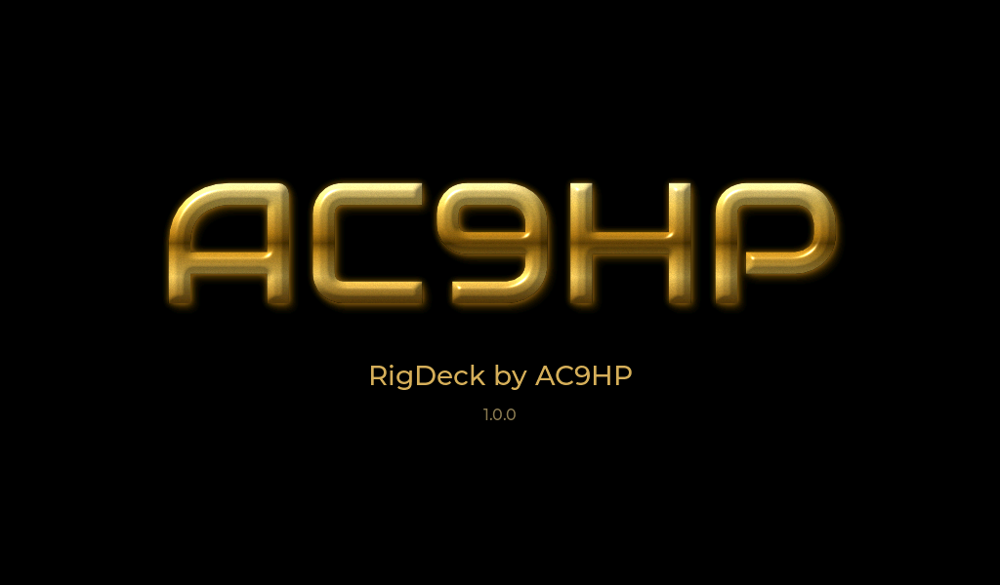
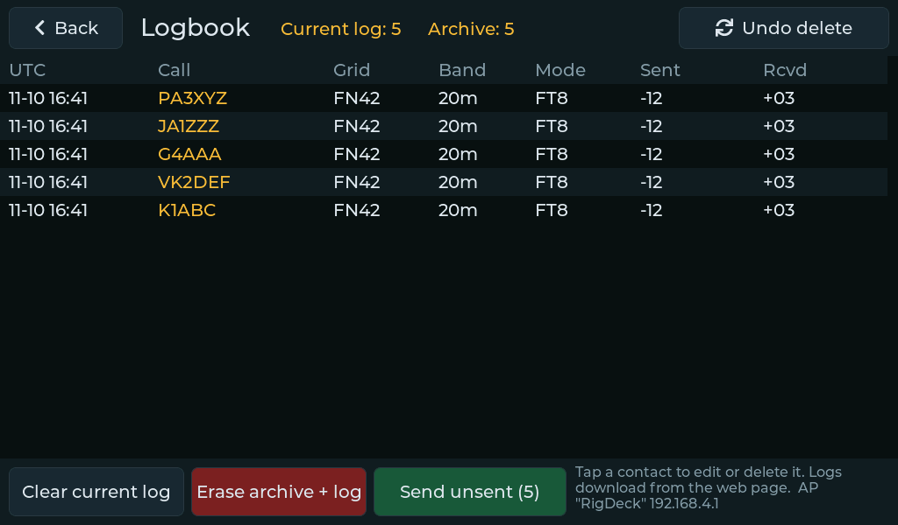
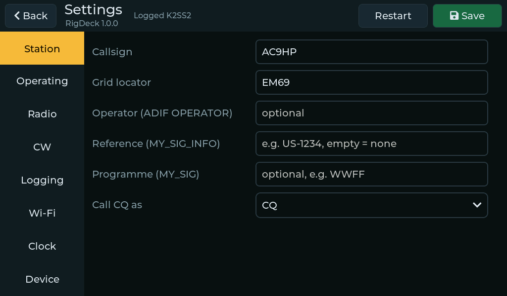
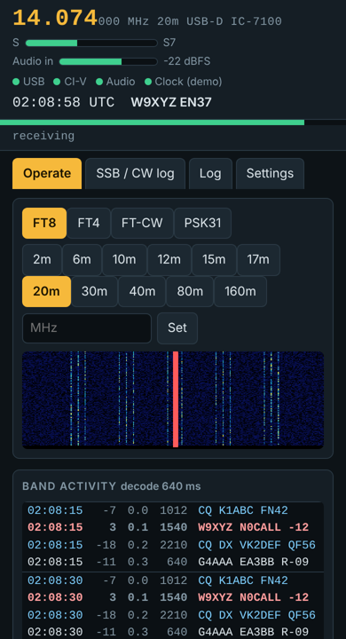

RigDeck
FT8 / FT4 / FT-CW station, ADIF logger and control head for your radio.
- Connect the board's USB-C port to this computer with a data cable (not the USB-A port the radio plugs into).
- Press Install RigDeck, pick the board's serial port (often "USB Serial" or "CH343"), and follow the steps.
- Updating? When asked, leave "Erase device" unticked to keep your logs and settings.
- When it restarts, join the Wi-Fi network RigDeck (password
ft8ft8ft8) and open http://192.168.4.1, or use the touch screen.
Screens
RigDeck 1.0.0 on the 7-inch touch screen and in a browser, shown with sample stations.







Other ways to flash
The .bin above is a complete image that goes at address 0x0. With esptool:
esptool --chip esp32p4 write-flash 0x0 rigdeck.bin 0x7C0000 otadata.bin
(otadata.bin, in the same folder as the .bin, makes the board start the version just written. Versions before 0.9.45 do not have it.)
Or open Espressif's online flasher, connect, and add the file at address 0x0.
About
RigDeck runs FT8, FT4, FT-CW and PSK31, logs SSB/CW contacts with CW macros, keeps an ADIF log, sends contacts to your logging program, and works as a touch-screen control head. Radios: Icom IC-7100 and IC-705, Yaesu FTX-1, QRP Labs QMX / QMX+ over one USB cable; beta adds more Icom, Yaesu, Kenwood and Elecraft (KX2/KX3/K3/K2) radios and sound-card interfaces (SignaLink, Digirig).
Source code, manual and release notes on GitHub · MIT licence